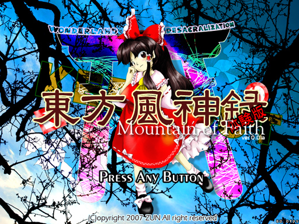

博麗神社。幻想郷の東の境界にある寂れた神社である。 里居を忘れた妖怪がここを寝床にしているかの様に、いつも人間以外の生き物で賑やかであった。 妖怪の多い神社に人間の参拝客など居る筈もなく、神社におわす神様は信仰心不足に悩んでいた。 ――そんな神社にも転機が訪れたのである。 |

| 東方Project 第十弾!! とうほうふうじんろく 「東方風神録 〜 Mountain of Faith.」はもの凄くストレートな弾幕シューティングです。 いつの間にか妖怪だらけとなってしまった博麗神社を巡り、神々の弾幕が蘇る。 ＊このゲームには過激な弾幕シーンが含まれております 小さなお子様や、弾幕アレルギーの方はアレしてください。 |
・マニュアル
| ・ダウンロード（体験版、アップデートパッチ） | |
| 今後の予定 | |
|---|---|
| ○体験版CD | 5/20「博麗神社 例大祭」にて配布 |
| ○体験版ダウンロード | こちらのページで |
| ○製品版 | 2007夏コミにて発表、その後、各同人ショップにて委託販売中です。 |
| 体験版と製品版の違い 体験版は３面までしか遊べません。 ＊また、ゲームの仕様、ノリ、諸々は、何の予告もなく大変更する事もあります | |
| 動作環境 | |
|---|---|
| 必須環境 | |
| ＯＳ | Windows 2000/XP なお、DirectX 9以上がインストールされていること |
| ＣＰＵ | Pentium 以降（もしくは互換）のCPU （推奨 1GHz以上） |
| メインメモリ | 空き実メモリ 128M以上必要 |
| ビデオカード | DirectX8.0以上の DirectGraphic 対応の高速なビデオカード(必須 VRAM32M以上) 今のところ正常に動くことが確認取れているビデオカード ・nVIDIA GeForce シリーズ ・ATI RADEON シリーズ 等 |
| その他 | パッドコントローラ 高い暢気さ ある程度の信仰心 |